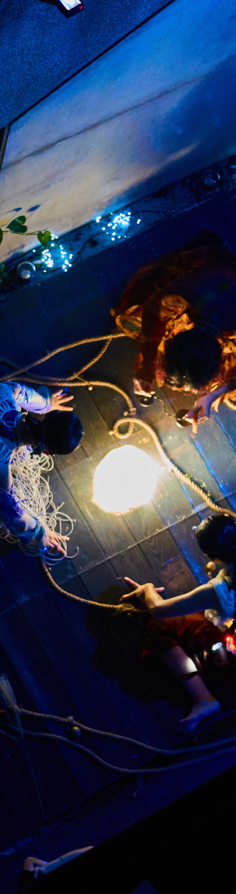
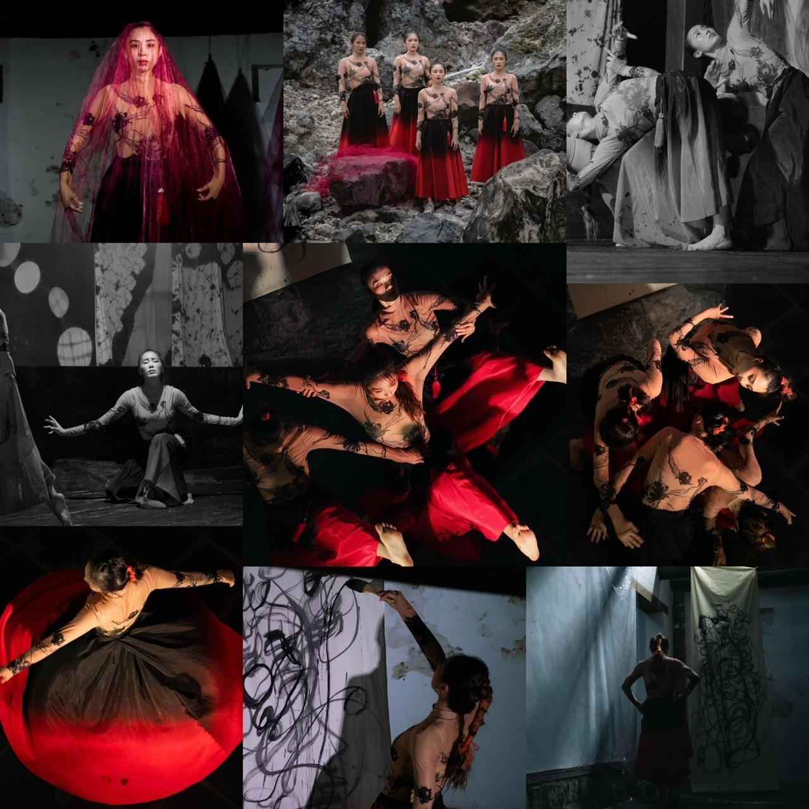
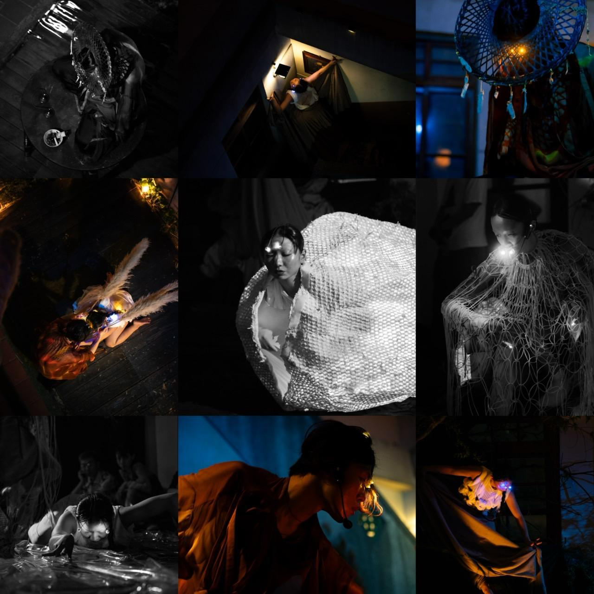
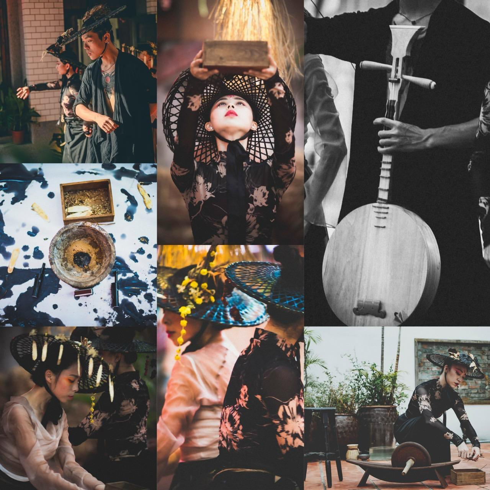
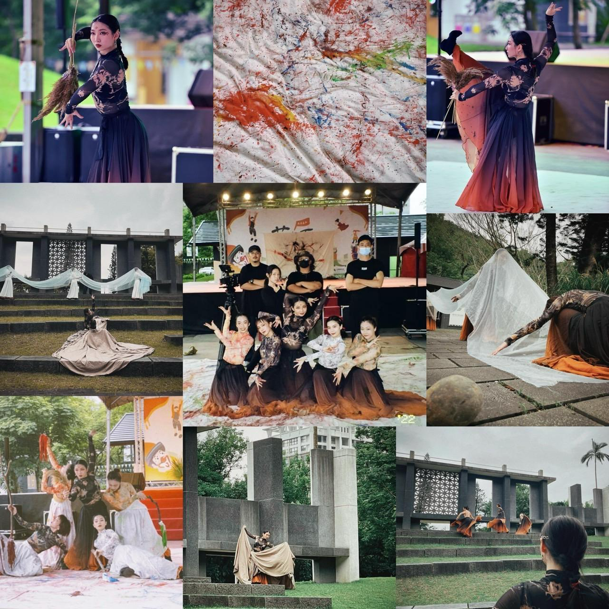
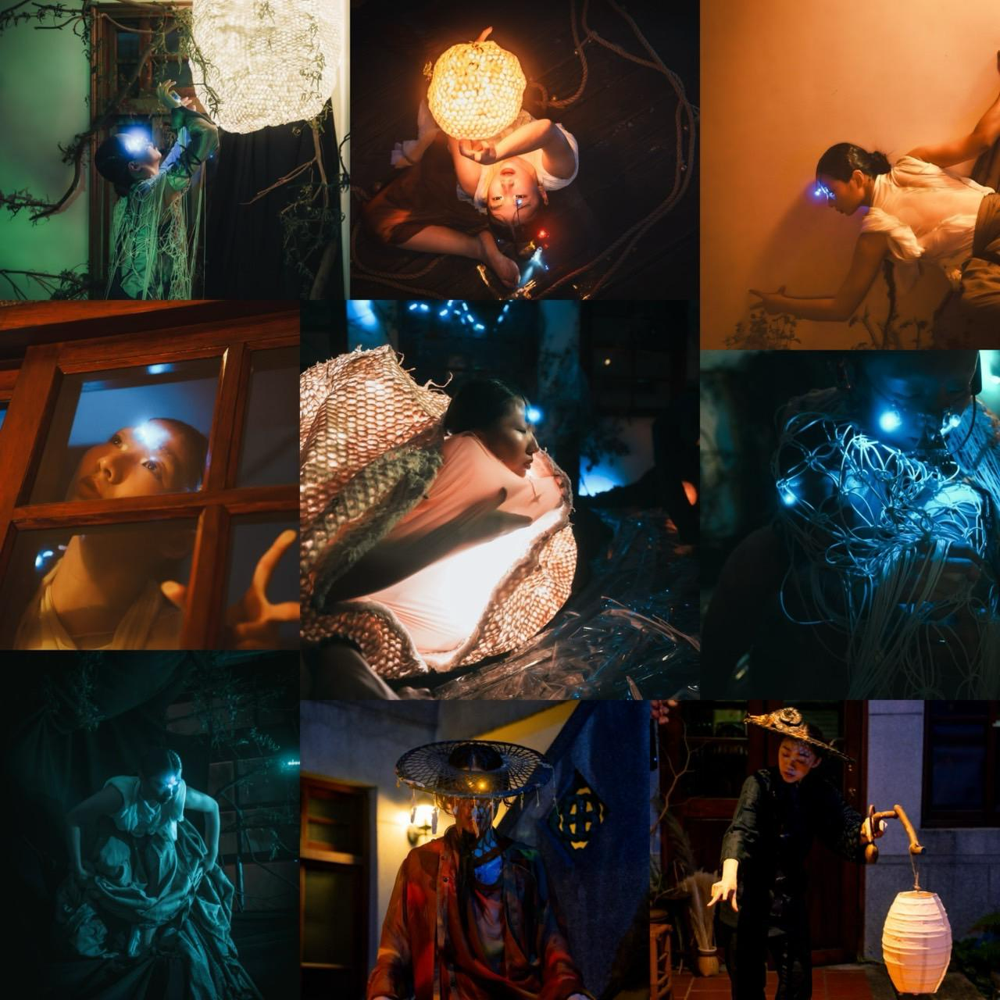

身體作為場域感知
以身體讀取環境、歷史與文化痕跡，讓演出不只發生在空間中，也與空間共同生成。

以身體、聲音、即興與儀式結構回應土地、文化和時間；在自然與歷史場域中發展沉浸式的當代表演語彙。


人米犬頁製作團長與創始人，舞蹈藝術家、編舞家。創作以舞蹈為核心，結合聲音、即興演出與多元藝術形式，持續探索身體語言的可能性。
作品多在自然與歷史場域中展開，透過細膩的視覺與肢體編排，將傳統與當代、物質與非物質、時間與空間轉化為可被感知的身體經驗。
Selected Works
從藝術節、公共藝術、歷史場域到劇場首演，作品持續在不同尺度的空間中建立身體與環境的對話。
Visual Archive
以下照片由你提供的 CV PDF 中抽出，用於建立可快速感知作品氣質的視覺履歷。









Practice
把履歷從「事件列表」推進到「藝術方法」：讓評審、策展人與合作單位更快理解你真正能帶來什麼。
以身體讀取環境、歷史與文化痕跡，讓演出不只發生在空間中，也與空間共同生成。
從傳統與地方知識出發，透過編舞、聲響與秩序建立可被當代觀眾進入的感官形式。
能在小型團隊與有限預算中完成提案、排練、行政協調、演出執行與影像整理。
Contact / Portfolio
個人姓名、email、電話、正式網站與社群帳號可再補入此版，作為正式投遞版本。